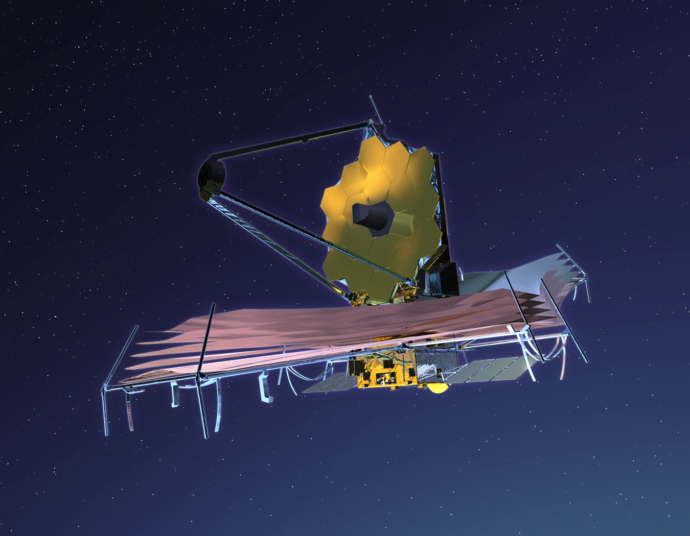

La exploración espacial
La exploración espacial nos permite conocer mejor el universo. A través de telescopios, satélites y naves espaciales, los científicos investigan planetas, estrellas y galaxias.
La llegada a la Luna
En 1969, la misión Apolo 11 logró que los primeros seres humanos caminaran sobre la Luna. Neil Armstrong fue el primero en pisar su superficie.
El telescopio James Webb

El telescopio espacial James Webb fue lanzado en 2021. Permite observar galaxias lejanas, estudiar estrellas y analizar las atmósferas de algunos exoplanetas.
La exploración de Marte
La NASA ha enviado robots a Marte para estudiar su superficie. Uno de ellos es Perseverance, que busca señales de posible vida microbiana antigua.